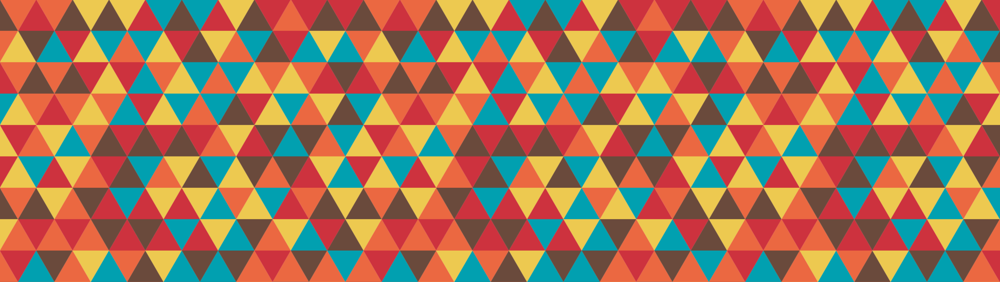

Documents personnels
Voici quelques documents que j'ai rédigés qui pourraient intéresser.
Prépa
- Mon rapport sur mon TIPE portant sur Le traitement du problème du Bin-Packing par algorithme génétique, ainsi que le diapo de présentation.
ENS
- Mes travaux de lecture dirigée avec Éloan Rapion sur une preuve du Nullstellensatz par Hilbert, sous la tutelle de Mercedes Haiech, ainsi que notre diapo.
- Mon diapo de groupe de lecture sur les réseaux antagonistes génératifs de Wasserstein (WGAN) avec Nathanael Hassler et Romain Périer. Ainsi que le code python et la vidéo de l'évolution de notre WGAN.
- Mon autre diapo de groupe de lecture sur la représentation induite et les règles de branchement pour l'induction avec Éloan Rapion.
Sorbonne
Notes de cours
- Homotopie, par Christian Ausoni.
- Théorie de l'homologie, par Baptiste Rognerud.
- Topologie algébrique des variétés, par Julien Marché.
Travaux
- Mon mémoire sur la catégorification d'algèbre amassées sous la tutelle de Yann Palu.
- Étude de l'article de recherche Deciding polydrehality of spectrahedra pour le cours Algebraic technics for optimization de Elias Tsigaridas.
Petits projets persos
- Une ébauche de théorie sur les formes \(\sigma\)-sequilinéaires d'ordre \(k\).
- Mon projet mathranslator à venir.
Les Topoï de Grothendieck
- Une petite introduction à la théorie des catégories.
- Mes notes sur les topoï de Grothendieck.